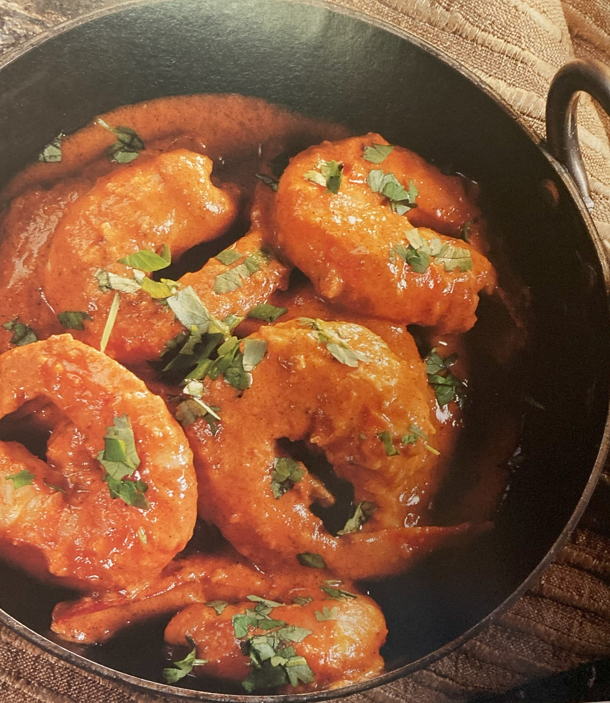

King Prawn Korma

Ingredients
Switch to Steps
-
10 -12 peeled, cooked King Prawns, thawed or frozen
-
3 Tbsp Plain Yogurt
-
1 tsp Paprika
-
1 tsp Garam Masala
-
1 Tbsp Tomato Paste
-
4 Tbsp Coconut Milk
-
1 tsp Chilli Powder
-
2/3 cup Water
-
1 Tbsp Vegetable Oil
-
1 Tbsp Ground Coriander
-
1 tsp Crushed Garlic
-
1 tsp Fresh Ginger Root, grated
-
1 in piece Cinnemon Stick, halved
-
2 pods Green Cardamon
-
Salt
-
1 Tbsp Fresh Cilantro, chopped
Steps
Switch to Ingredients
-
If the prawns had been frozen, drain thoroughly in a strainer
over a bowl to ensure that all excess liquid is removed before cooking.
-
Place the yogurt, garam masala, tomato paste, coconut milk, chilli powder and water
into a large glass bowl and season to taste with salt.
-
Blend the ingredients together.
-
Heat the oil in a wok or large pan, add the garlic, ginger, cinnemon and
cardamon pods and season to taste with salt.
-
Fry over low heat for 1-2 minutes.
-
Pour in the spice mixture and bring to a boil, stirring occasionally.
-
Add the prawns and cook, stirring constantly, until the sauce starts to thicken.
-
Garnish with ther chopped cilantro and serve.